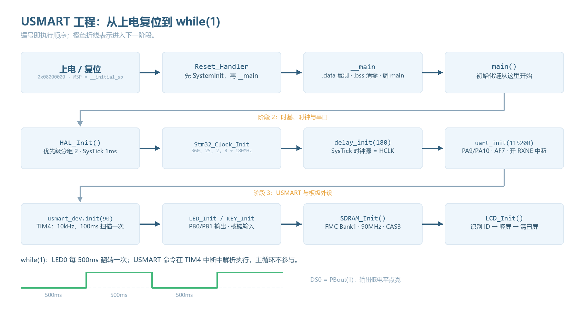
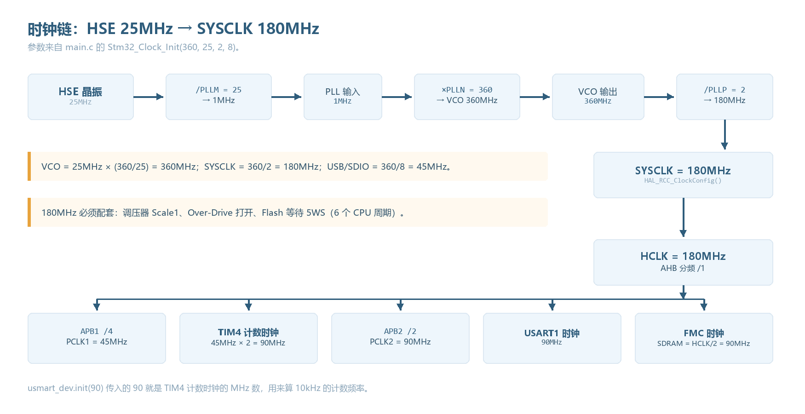
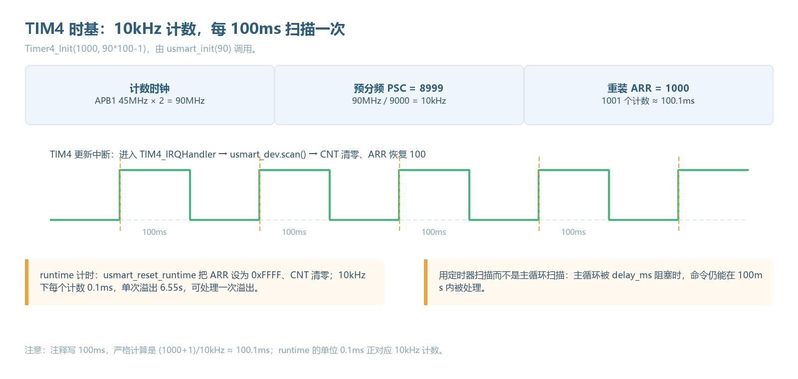
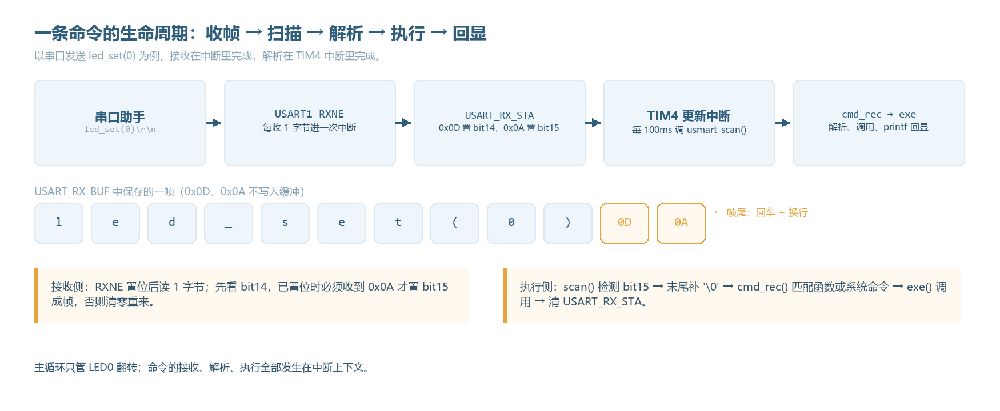
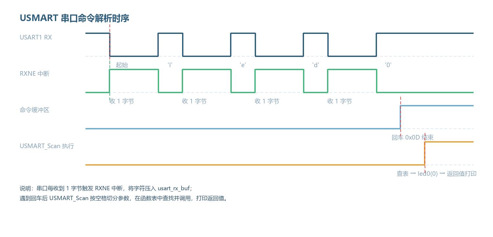
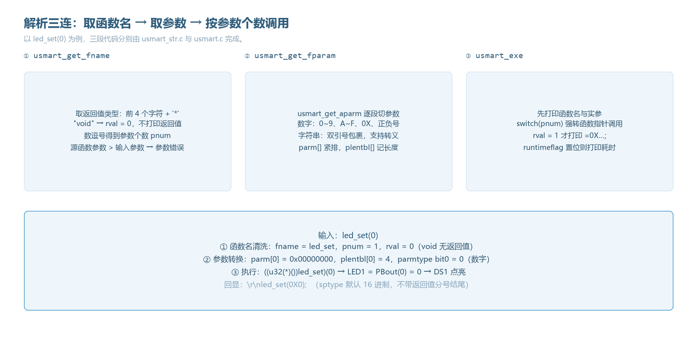

01 实验概述与硬件资源
USMART 把“调用固件函数”变成一条串口命令
USMART 是正点原子提供的调试组件：在 usmart_config.c 的函数表里登记函数原型后，就能在串口助手里输入 led_set(0)、delay_ms(500) 这样的文本，直接调用固件里的函数，不用改代码、不用重新编译。本实验的主流程与实验 12（TFTLCD）相同，新增的是这条调试通道。
| 对比项 | 实验 12 TFTLCD | 实验 15 USMART |
|---|
| 新增内容 | MCU 屏驱动与显示 | USMART 组件 + 函数注册表 |
| 交互方式 | 只能看屏幕 | 串口发命令，实时调用函数 |
| 改代码后的动作 | 重新编译、下载 | 改函数表编译一次，之后只发命令 |
硬件资源与引脚
| 功能 | 引脚 | 配置 |
|---|
| USART1 TX / RX | PA9 / PA10 | 复用 AF7，115200 8N1，开 RXNE 中断 |
| DS0 | PB1 | 推挽输出，主循环每 500ms 翻转 |
| DS1 | PB0 | 推挽输出，由 led_set(sta) 控制 |
| KEY0 / KEY1 / KEY2 | PH3 / PH2 / PC13 | 输入 |
| WK_UP | PA0 | 输入 |
| SDRAM | FMC SDRAM Bank1 | 0xC0000000，16 位，90MHz，CAS=3 |
| LCD（MCU 屏） | FMC NOR/SRAM Bank1 | 16 位，A18 选命令/数据，基址 0x60000000 |
STM32F429IGT6
180MHz
HSE 25MHz
串口 115200
板上 LED 为低电平点亮：LED_Init 把 PB0、PB1 置高，两灯默认熄灭，所以 led_set(0) 才是“点亮 DS1”。
02 目录与文件分工
启动链路分布在六个目录里，先认清每个文件负责哪一段
| 路径 | 负责什么 | 本页看什么 |
|---|
| USER/main.c | 初始化顺序、主循环、led_set / test_fun | 03、13 节 |
| USER/system_stm32f4xx.c | SystemInit：FPU、VTOR、复位时钟 | 05 节 |
| USER/stm32f4xx_it.c | 异常与中断入口转发 | 10 节 |
| SYSTEM/sys/sys.c | Stm32_Clock_Init：PLL 与总线分频 | 06 节 |
| SYSTEM/delay/delay.c | delay_init / delay_us / delay_ms | 07 节 |
| SYSTEM/usart/usart.c | uart_init、USART1 中断、printf 重定向 | 07、10 节 |
| USMART/usmart.c | 扫描、解析、执行、系统命令、TIM4 时基 | 08~12 节 |
| USMART/usmart_str.c | 函数名与参数字符串解析 | 11 节 |
| USMART/usmart_config.c | 函数注册表与 usmart_dev 设备结构体 | 08 节 |
| HARDWARE/LED、KEY | LED_Init / KEY_Init | 03 节 |
| HARDWARE/SDRAM | SDRAM_Init：FMC 与上电序列 | 03、14 节 |
| HARDWARE/LCD | LCD_Init / LTDC_Init（RGB 屏显存在 SDRAM） | 03、14 节 |
| CORE/startup_stm32f429xx.s | 栈堆、向量表、Reset_Handler | 04 节 |
| HALLIB/ | HAL_Init、RCC、UART、TIM 等库实现 | 只读被调用到的函数 |
HALLIB 正文不逐行读。本页只在 HAL_Init、时钟配置、UART 接收这些被工程直接调用的位置引用库代码。
03 启动流程总览
从上电复位到 while(1)，初始化顺序决定了后面每条命令能否工作

图 3-1 启动链路总览
main 函数全文
void led_set(u8 sta)
{
LED1=sta; // DS1 接 PB0，写 0 点亮
}
void test_fun(void(*ledset)(u8),u8 sta)
{
ledset(sta); // 函数指针作为参数，演示 USMART 支持
}
int main(void)
{
HAL_Init(); // 初始化HAL库
Stm32_Clock_Init(360,25,2,8); // 设置时钟,180Mhz
delay_init(180); // 初始化延时函数
uart_init(115200); // 初始化USART
usmart_dev.init(90); // 初始化USMART
LED_Init(); // 初始化LED
KEY_Init(); // 初始化按键
SDRAM_Init(); // 初始化SDRAM
LCD_Init(); // 初始化LCD
POINT_COLOR=RED;
LCD_ShowString(30,50,200,16,16,"Apollo STM32F4/F7");
LCD_ShowString(30,70,200,16,16,"USMART TEST");
LCD_ShowString(30,90,200,16,16,"ATOM@ALIENTEK");
LCD_ShowString(30,110,200,16,16,"2015/12/10");
while(1)
{
LED0=!LED0;
delay_ms(500); // DS0 每 500ms 翻转一次
}
}
先时钟后 Delay
先串口后 USMART
先 SDRAM 后 LCD
顺序不能随手调换：delay_init 与 uart_init 都依赖 180MHz 时钟；USMART 的 TIM4 依赖时钟；LCD 若为 RGB 屏，LTDC 显存放在 SDRAM 的 0xC0000000，必须先初始化 SDRAM。
04 启动文件与向量表
内核第一条指令不是 main，而是从 0x08000000 取 MSP 与复位向量
startup_stm32f429xx.s 定义了栈（Stack_Size = 0x400，1KB）、堆（Heap_Size = 0x200，512B）和向量表。向量表第 0 项是 __initial_sp，第 1 项是 Reset_Handler；上电后内核自动把这两项装入 MSP 与 PC。
| 向量偏移 | 符号 | 作用 |
|---|
| 0x0000 | __initial_sp | 初始栈顶，装入 MSP |
| 0x0004 | Reset_Handler | 复位入口，装入 PC |
| 0x0008 / 0x000C | NMI_Handler / HardFault_Handler | 内核异常 |
| 0x00B8 | TIM4_IRQHandler | IRQ 30：USMART 的 100ms 扫描 |
| 0x00D4 | USART1_IRQHandler | IRQ 37：串口逐字节接收 |
| 0x003C | SysTick_Handler | IRQ 15：HAL 的 1ms 时基 |
Reset_Handler
Reset_Handler PROC
EXPORT Reset_Handler [WEAK]
IMPORT SystemInit
IMPORT __main
LDR R0, =SystemInit
BLX R0
LDR R0, =__main
BX R0
ENDP
Reset_Handler 只做两步：先调用 SystemInit，再跳到 __main。__main 由 C 库提供，负责把 .data 从 Flash 复制到 SRAM、把 .bss 清零，最后才调用 main。
工程没有定义 VECT_TAB_SRAM，因此 SystemInit 把 SCB->VTOR 指向 FLASH_BASE（0x08000000）；向量表不需要搬移，中断入口始终在 Flash 起始处。
05 SystemInit 与 HAL_Init
一个在 __main 之前，一个在 main 的第一行，职责完全不同
SystemInit：只做三件事
void SystemInit(void)
{
// 1. 打开 FPU（CP10/CP11 全访问）
#if (__FPU_PRESENT == 1) && (__FPU_USED == 1)
SCB->CPACR |= ((3UL << 10*2)|(3UL << 11*2));
#endif
// 2. 外部存储器控制器初始化（本工程为空实现）
SystemInit_ExtMemCtl();
// 3. 向量表重定位到 Flash 起始
#ifdef VECT_TAB_SRAM
SCB->VTOR = SRAM_BASE | VECT_TAB_OFFSET;
#else
SCB->VTOR = FLASH_BASE | VECT_TAB_OFFSET;
#endif
}
SystemInit 执行时 .data 还没搬、.bss 还没清零，所以它不调用任何依赖全局变量的代码；此时系统仍跑在复位后的 HSI 16MHz 上，主频配置留到 main 里做。
HAL_Init：分组与时基
| 动作 | 本项目取值 | 影响 |
|---|
| HAL_NVIC_SetPriorityGrouping | NVIC_PRIORITYGROUP_2 | 2 位抢占 + 2 位子优先级 |
| HAL_InitTick | TICK_INT_PRIORITY = 0x0F | SysTick 1ms，优先级最低 |
| 首次时基来源 | HSI 16MHz | 时钟配置完成后 HAL_RCC_ClockConfig 会再次重装 SysTick |
HAL_Init 先把 SysTick 按 16MHz 装好，Stm32_Clock_Init 切到 180MHz 后必须让 HAL 重新计算重装值，否则 HAL_Delay 会慢 11 倍多；HAL_RCC_ClockConfig 内部会调用 HAL_InitTick 完成这件事。
06 时钟链：25MHz → 180MHz
Stm32_Clock_Init(360,25,2,8) 四个实参分别对应 PLLN、PLLM、PLLP、PLLQ

图 6-1 时钟树与总线分频
__HAL_RCC_PWR_CLK_ENABLE(); // 先开 PWR 时钟
__HAL_PWR_VOLTAGESCALING_CONFIG(PWR_REGULATOR_VOLTAGE_SCALE1);
RCC_OscInitStructure.OscillatorType=RCC_OSCILLATORTYPE_HSE;
RCC_OscInitStructure.HSEState=RCC_HSE_ON;
RCC_OscInitStructure.PLL.PLLState=RCC_PLL_ON;
RCC_OscInitStructure.PLL.PLLSource=RCC_PLLSOURCE_HSE;
RCC_OscInitStructure.PLL.PLLM=pllm; // 25
RCC_OscInitStructure.PLL.PLLN=plln; // 360
RCC_OscInitStructure.PLL.PLLP=pllp; // 2
RCC_OscInitStructure.PLL.PLLQ=pllq; // 8
HAL_RCC_OscConfig(&RCC_OscInitStructure);
HAL_PWREx_EnableOverDrive(); // 180MHz 必须开
RCC_ClkInitStructure.SYSCLKSource=RCC_SYSCLKSOURCE_PLLCLK;
RCC_ClkInitStructure.AHBCLKDivider=RCC_SYSCLK_DIV1;
RCC_ClkInitStructure.APB1CLKDivider=RCC_HCLK_DIV4;
RCC_ClkInitStructure.APB2CLKDivider=RCC_HCLK_DIV2;
HAL_RCC_ClockConfig(&RCC_ClkInitStructure,FLASH_LATENCY_5);
| 节点 | 计算 | 结果 |
|---|
| HSE | stm32f4xx_hal_conf.h 中 HSE_VALUE | 25MHz |
| PLL 输入 | 25MHz / PLLM(25) | 1MHz |
| VCO | 1MHz × PLLN(360) | 360MHz |
| SYSCLK | 360MHz / PLLP(2) | 180MHz |
| HCLK | SYSCLK / AHB(1) | 180MHz |
| PCLK1 | HCLK / APB1(4) | 45MHz |
| PCLK2 | HCLK / APB2(2) | 90MHz |
| USB / SDIO | VCO / PLLQ(8) | 45MHz |
| TIM4 计数时钟 | PCLK1 × 2（APB1 分频不为 1） | 90MHz |
| Flash 等待 | FLASH_LATENCY_5 | 5WS，6 个 CPU 周期 |
180MHz 的三个前提缺一不可：调压器 Scale1、Over-Drive 打开、Flash 5 等待周期。少任何一个，系统可能能启动，但跑高负载会取指错误或死机。
07 延时、串口与 printf
delay 依赖 SysTick，串口依赖 90MHz 的 PCLK2，printf 靠 fputc 直接写数据寄存器
delay：轮询 SysTick 计数器
void delay_init(u8 SYSCLK)
{
HAL_SYSTICK_CLKSourceConfig(SYSTICK_CLKSOURCE_HCLK); // 时钟源 = HCLK
fac_us=SYSCLK; // 180，即每微秒 180 个计数
}
void delay_us(u32 nus)
{
u32 ticks,told,tnow,tcnt=0;
u32 reload=SysTick->LOAD;
ticks=nus*fac_us;
told=SysTick->VAL;
while(1)
{
tnow=SysTick->VAL;
if(tnow!=told)
{
if(tnow<told)tcnt+=told-tnow;
else tcnt+=reload-tnow+told;
told=tnow;
if(tcnt>=ticks)break;
}
}
}
void delay_ms(u16 nms)
{
u32 i;
for(i=0;i<nms;i++)delay_us(1000); // 循环 1000us
}
delay 不使用中断，只读 SysTick->VAL 累加差值；因此它不依赖 HAL 的 uwTick，也不会因为中断被关掉而失效。
串口：PA9/PA10 + RXNE 中断
UART1_Handler.Instance=USART1;
UART1_Handler.Init.BaudRate=115200;
UART1_Handler.Init.WordLength=UART_WORDLENGTH_8B;
UART1_Handler.Init.StopBits=UART_STOPBITS_1;
UART1_Handler.Init.Parity=UART_PARITY_NONE;
UART1_Handler.Init.Mode=UART_MODE_TX_RX;
HAL_UART_Init(&UART1_Handler); // MspInit 里配 PA9/PA10 AF7
HAL_NVIC_SetPriority(USART1_IRQn,3,3);
HAL_NVIC_EnableIRQ(USART1_IRQn);
printf：不勾 MicroLIB 也能用
int fputc(int ch, FILE *f)
{
while((USART1->SR&0X40)==0); // 等 TXE 置位
USART1->DR=(u8)ch;
return ch;
}
USART1 中断里用 HAL_UART_Receive(...,1,1000) 读字节，这是一个最长可阻塞 1000ms 的轮询函数。本实验命令很短，通常瞬间返回；但不要在中断里发长命令或接极慢的波特率，否则会拖住整个系统。
08 USMART 组件与函数注册表
usmart_dev 是设备对象，usmart_nametab 是“名字 → 函数指针”的白名单
| 字段 | 含义 |
|---|
| funs | 指向 usmart_nametab 函数表 |
| init / cmd_rec / exe / scan | 四个函数指针，指向 usmart.c 的实现 |
| fnum | 表项个数，本工程为 26 |
| parm / plentbl / parmtype | 参数缓存（200 字节）、每参数长度、数字/字符串标记 |
| pnum / id | 本次命令的参数个数、匹配到的函数下标 |
| sptype | 显示进制，usmart_init 里设为 1（十六进制） |
| runtime / runtimeflag | 运行时间计数值（0.1ms 单位）与开关 |
注册表：新增函数只加一行
struct _m_usmart_nametab usmart_nametab[]=
{
(void*)read_addr,"u32 read_addr(u32 addr)",
(void*)write_addr,"void write_addr(u32 addr,u32 val)",
(void*)delay_ms,"void delay_ms(u16 nms)",
(void*)delay_us,"void delay_us(u32 nus)",
...
(void*)LCD_Clear,"void LCD_Clear(u16 Color)",
(void*)LTDC_Clear,"void LTDC_Clear(u32 Color)",
(void*)led_set,"void led_set(u8 sta)",
(void*)test_fun,"void test_fun(void(*ledset)(u8),u8 sta)",
};
struct _m_usmart_dev usmart_dev=
{
usmart_nametab,usmart_init,usmart_cmd_rec,usmart_exe,usmart_scan,
sizeof(usmart_nametab)/sizeof(struct _m_usmart_nametab),
0,0,1,0,0,0
};
26 个注册函数
最多 10 个参数
参数缓存 200 字节
默认十六进制回显
名字后面的字符串是函数原型，解析器靠它判断返回值类型（void 与否）和源函数参数个数；表里漏登记的函数，串口会回“函数错误!”。
09 TIM4 时基与 100ms 扫描
命令不靠主循环轮询，而是由 TIM4 更新中断每 100ms 触发一次扫描

图 9-1 TIM4 时基与扫描节奏
void usmart_init(u8 sysclk)
{
#if USMART_ENTIMX_SCAN==1
Timer4_Init(1000,(u32)sysclk*100-1); // 90*100-1 = 8999
#endif
usmart_dev.sptype=1; // 十六进制显示
}
void Timer4_Init(u16 arr,u16 psc)
{
__HAL_RCC_TIM4_CLK_ENABLE();
HAL_NVIC_SetPriority(TIM4_IRQn,3,3);
HAL_NVIC_EnableIRQ(TIM4_IRQn);
TIM4_Handler.Init.Prescaler=psc; // 8999 → 10kHz
TIM4_Handler.Init.Period=arr; // 1000 → 100.1ms
HAL_TIM_Base_Init(&TIM4_Handler);
HAL_TIM_Base_Start_IT(&TIM4_Handler);
}
void TIM4_IRQHandler(void)
{
if(__HAL_TIM_GET_IT_SOURCE(&TIM4_Handler,TIM_IT_UPDATE)==SET)
{
usmart_dev.scan(); // 有完整命令就解析执行
__HAL_TIM_SET_COUNTER(&TIM4_Handler,0);
__HAL_TIM_SET_AUTORELOAD(&TIM4_Handler,100);
}
__HAL_TIM_CLEAR_IT(&TIM4_Handler,TIM_IT_UPDATE);
}
| 项目 | 值 | 说明 |
|---|
| 计数时钟 | 90MHz | PCLK1 45MHz × 2 |
| PSC | 8999 | 90MHz / 9000 = 10kHz |
| ARR | 1000 | 1001 个计数 ≈ 100.1ms |
| 中断优先级 | 抢占 3 / 子优先级 3 | 与 USART1 相同 |
| runtime 量程 | ARR = 0xFFFF | 65536 × 0.1ms = 6.5536s，可处理一次溢出 |
扫描放在中断里，主循环被 delay_ms 阻塞时命令照样能被响应；代价是命令函数本身也在中断上下文执行，函数里若有长延时，会推迟主循环和串口接收。
10 串口接收状态机
USART_RX_STA 用两个高位标记 0x0D / 0x0A，用低 14 位记长度

图 10-1 一条命令从接收中断到执行的路径
void USART1_IRQHandler(void)
{
u8 Res;
if(__HAL_UART_GET_FLAG(&UART1_Handler,UART_FLAG_RXNE)!=RESET)
{
HAL_UART_Receive(&UART1_Handler,&Res,1,1000);
if((USART_RX_STA&0x8000)==0) // 上一帧已处理完
{
if(USART_RX_STA&0x4000) // 已收到 0x0D
{
if(Res!=0x0a)USART_RX_STA=0; // 不是 0x0A，整帧作废
else USART_RX_STA|=0x8000; // 收到 0x0A，成帧
}
else
{
if(Res==0x0d)USART_RX_STA|=0x4000;
else
{
USART_RX_BUF[USART_RX_STA&0X3FFF]=Res;
USART_RX_STA++;
if(USART_RX_STA>(USART_REC_LEN-1))USART_RX_STA=0;
}
}
}
}
HAL_UART_IRQHandler(&UART1_Handler);
}
| 收到 | 动作 |
|---|
| 普通字节 | 写入 USART_RX_BUF，长度加 1 |
| 0x0D | bit14 置 1，不写入缓冲区 |
| 0x0A（bit14 已置） | bit15 置 1，表示一帧可解析 |
| 非 0x0A（bit14 已置） | USART_RX_STA = 0，丢弃整帧 |
| 长度超过 199 | USART_RX_STA = 0，重新接收 |
串口助手必须以“发送新行”或手动追加回车换行发送，否则 bit15 永远不会置位，命令看似发出却毫无反应。

图 10-2 USART1 逐字节接收命令到 USMART_Scan 查表执行的时序
11 命令解析：名字、参数、返回值
文本命令被切成函数名、参数个数、参数值三部分，再按函数表匹配

图 11-1 一条命令的解析三段
参数切分与转换
case 0: // 数字
if(tstr[0]!='\0')
{
i=usmart_str2num(tstr,&res); // 字符串转 u32
if(i)return USMART_PARMERR;
*(u32*)(usmart_dev.parm+usmart_get_parmpos(n))=res;
usmart_dev.parmtype&=~(1<<n); // 标记为数字
usmart_dev.plentbl[n]=4;
n++;
}
break;
case 1: // 字符串
len=usmart_strlen(tstr)+1;
usmart_strcopy(tstr,&usmart_dev.parm[usmart_get_parmpos(n)]);
usmart_dev.parmtype|=1<<n; // 标记为字符串
usmart_dev.plentbl[n]=len;
n++;
break;
函数表匹配
sta=usmart_get_fname(str,rfname,&rpnum,&rval);
for(i=0;i<usmart_dev.fnum;i++)
{
sta=usmart_get_fname((u8*)usmart_dev.funs[i].name,sfname,&spnum,&rval);
if(usmart_strcmp(sfname,rfname)==0) // 区分大小写
{
if(spnum>rpnum)return USMART_PARMERR;
usmart_dev.id=i;
break;
}
}
if(i==usmart_dev.fnum)return USMART_NOFUNCFIND;
sta=usmart_get_fparam(str,&i);
usmart_dev.pnum=i;
| 规则 | 说明 |
|---|
| 返回值判断 | 取原型前 5 个字符，等于 "void" 则 rval = 0，不打印返回值 |
| 参数个数 | 数括号内逗号；参数为 (void) 时按 0 个处理 |
| 数字格式 | 十进制直接写；十六进制必须写成 0X1F4，只写 F4 会被判为非法 |
| 负数 | 允许前置 - 或 +，最终按 u32 存入 parm[] |
| 字符串 | 用双引号包裹，反斜杠作为转义符，转义符本身不保存 |
| 参数不足 | 输入参数比注册原型少，直接返回“参数错误!” |
解析器最多支持 10 个参数，参数缓存 200 字节；函数名比较不做大小写折叠，led_set 不能写成 LED_SET。
12 函数执行与 runtime 计时
按参数个数 switch 成不同的函数指针签名，调用前后夹一段 TIM4 计时
usmart_reset_runtime(); // ARR=0xFFFF，CNT=0
switch(usmart_dev.pnum)
{
case 0:
res=(*(u32(*)())usmart_dev.funs[id].func)();
break;
case 1:
res=(*(u32(*)())usmart_dev.funs[id].func)(temp[0]);
break;
case 2:
res=(*(u32(*)())usmart_dev.funs[id].func)(temp[0],temp[1]);
break;
...
case 10:
res=(*(u32(*)())usmart_dev.funs[id].func)(temp[0],...,temp[9]);
break;
}
所有函数都被强转成 u32 (*)() 再调用：实参在 parm[] 里连续排列，temp 是它的 u32 视图，所以 1~10 个参数可以共用同一张表。函数返回后若 rval = 1，串口打印 =0X…;，否则只打印分号。
runtime：用 TIM4 的 CNT 当毫秒表
void usmart_reset_runtime(void)
{
__HAL_TIM_CLEAR_FLAG(&TIM4_Handler,TIM_FLAG_UPDATE);
__HAL_TIM_SET_AUTORELOAD(&TIM4_Handler,0XFFFF);
__HAL_TIM_SET_COUNTER(&TIM4_Handler,0);
usmart_dev.runtime=0;
}
u32 usmart_get_runtime(void)
{
if(__HAL_TIM_GET_FLAG(&TIM4_Handler,TIM_FLAG_UPDATE)==SET)
usmart_dev.runtime+=0XFFFF; // 溢出一次补 65535
usmart_dev.runtime+=__HAL_TIM_GET_COUNTER(&TIM4_Handler);
return usmart_dev.runtime;
}
| 项目 | 值 | 含义 |
|---|
| 计数频率 | 10kHz | 1 个计数 = 0.1ms |
| 单次量程 | 65536 个计数 | 6.5536s |
| 溢出处理 | runtime += 0xFFFF | 只补一次，超过约 13.1s 会失真 |
| 打印格式 | runtime/10 . runtime%10 ms | 例如 12.3ms |
计时利用的是同一个 TIM4：重置时把 ARR 拉到 0xFFFF，执行完由 TIM4 中断把 ARR 恢复成 100。函数本身在 TIM4 中断里执行，所以不会嵌套触发，读 CNT 得到的差值就是函数执行时间。
13 主循环、现象与交互演示
主循环只做两件事：翻转 DS0、延时 500ms；命令完全异步
| 操作 | 可观察现象 |
|---|
| 上电 | LCD 显示 4 行文字，DS0 每 500ms 闪一次 |
| 串口发 led_set(0) | DS1 点亮，串口回显 led_set(0X0); |
| 串口发 led_set(1) | DS1 熄灭，回显 led_set(0X1); |
| 串口发 delay_ms(500) | 回显 delay_ms(0X1F4); 执行期间主循环暂停 |
| 串口发未注册的名字 | 返回“函数错误!” |
| 串口发 runtime 1 | 返回 Run Time Calculation ON，此后命令附带耗时 |
串口命令演示（仅演示解析与执行分支，不接真实硬件）
等待命令：点击按钮模拟串口发送一行命令。
演示只复现 led_set 的赋值结果与回显格式；DS0 仍按主循环的 500ms 节奏闪烁，命令不会改变它。
14 总结与排查
全链路回顾，以及“没反应 / 报错 / 卡住”三类问题的排查顺序
启动链路回顾
| 阶段 | 关键动作 | 证据位置 |
|---|
| 复位 | 取 MSP 与 Reset_Handler | startup_stm32f429xx.s |
| SystemInit | 开 FPU、设 VTOR | system_stm32f4xx.c |
| __main | .data 复制、.bss 清零 | 启动文件 / C 库 |
| HAL_Init | 优先级分组 2、SysTick 1ms | stm32f4xx_hal.c |
| 时钟 | 25MHz → 180MHz | sys.c |
| 延时 | SysTick 轮询，fac_us = 180 | delay.c |
| 串口 | PA9/PA10、115200、RXNE | usart.c |
| USMART | TIM4 10kHz，100.1ms 扫描 | usmart.c |
| SDRAM | FMC 90MHz、CAS3、上电序列 | sdram.c |
| LCD | ID 识别、竖屏、白屏 | lcd.c |
| 主循环 | DS0 翻转 + 500ms 延时 | main.c |
现象 → 原因 → 排查
| 现象 | 常见原因 | 排查动作 |
|---|
| 串口完全无回显 | 波特率不符、PA9/PA10 未复用、EN_USART1_RX = 0、fputc 未重定向 | 查 115200、AF7、宏开关，确认 fputc 被链接 |
| 回“函数错误!” | 函数没登记，或名字大小写不一致 | 在 usmart_nametab 补一行，按原型拼写 |
| 回“参数错误!” | 十六进制缺 0X；参数个数少于原型 | 十六进制写 0X1F4；按原型补齐参数 |
| 发了命令没动作 | 没有回车换行，bit15 未置位 | 串口助手勾选“发送新行” |
| 执行后系统像卡住 | 命令函数里有长延时或长循环，且运行在中断里 | 避免 delay_ms(5000)；长任务放回主循环 |
| runtime 一直为 0 | runtimeflag 未开，或 USMART_ENTIMX_SCAN = 0 | 发 runtime 1；确认 Timer4_Init 被调用 |
| DS1 逻辑反了 | 板载 LED 低电平点亮 | led_set(0) 点亮、led_set(1) 熄灭 |
| LCD 白屏 | RGB 屏显存在 SDRAM 的 0xC0000000，SDRAM 未初始化 | 保证 SDRAM_Init 在 LCD_Init 之前 |
记住一句话：复位后先有时钟，再有延时和串口；USMART 的所有解析与执行都跑在 TIM4 中断里，主循环只负责 DS0 的节拍。